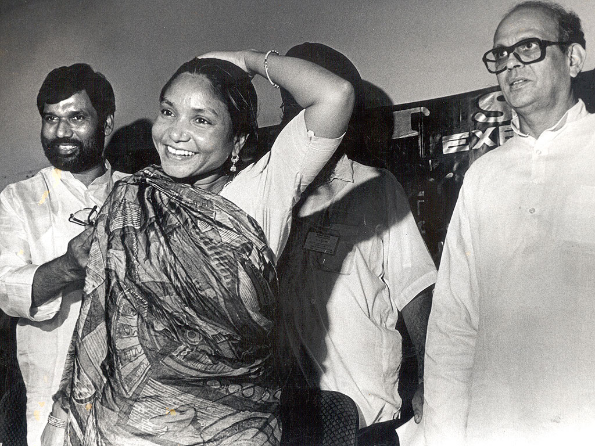

On 12 May 1996, a young woman from the Mallah caste wins a seat in the Indian parliament. She has no formal education, and from the age of 11 has been repeatedly raped and abused by her older husband. But she is also a dacoit, leader of a band of armed robbers, the "Beautiful Bandit" of the Chambal region of India and the undisputed queen of the ravines. She has just spent 11 years in prison for the massacre of 22 upper caste men at Behmai in 1981, carried out in revenge of a gang rape perpetrated against her. Her name is Phoolan Devi and she wins with a landslide majority of 37,000.
Devi is a rare example of a subaltern woman activist who achieved political power. Her story is unparalleled; no other woman endured such brutality and accomplished such heights of political achievement. Suffering on account of both her caste and her gender, she became the first woman to join the symbolic iconography of champions of the poor and oppressed in the postcolonial era.
Devi's story represents the postcolonial sympathy for the subaltern, a transformational politics dedicated to the removal of inequality which is ingrained in the caste system. It is a refined form of apartheid, in which the lower castes suffer from discrimination, forbidden from sitting on buses and collecting water from common wells. Crimes such as assaults or rapes of lower caste women are often disregarded by the state, and Devi herself, having left her abusive husband, suffered violence at the hands of the police. She was then kidnapped by a gang of bandits who had been paid to kill her and eventually became the leader of a Mallah-dominated gang.
Hailed the "bandit queen" by the locals in the Chambal region of India, Devi roamed the ravines of the northern states of Uttar and Madhya Pradesh. Her supporters claimed that she robbed high caste families in various villages and shared the loot with the lower castes. She has been mythologized as the reincarnation of the fierce Hindu goddess, Durga; an association Devi herself cited, often declaring "victory to the goddess Durga".
After the Behmai massacre in Uttar Pradesh in 1981, Devi's fame spread. On the run for two years after the killings, the police's attempts to locate her failed because of her support from the poor in the region. In 1983, the government asked for her surrender and, with a price of $10,400 on her head, she agreed.
Devi's dramatic surrender to the Madhya Pradesh Police was attended by some 8,000 people. The "Beautiful Bandit", as glorified in the Indian press, laid down her rifle before the portraits of Gandhi and the Goddess Durga. As one commentator from The Hindu described it, "The legend turned out to be a wisp of a girl, dressed in khaki bell-bottoms, revolver held high over her head and a red bandana holding back unruly strands of hair."

Yet author Roy Moxham, who became friends with Devi while she was imprisoned, does not believe that her image was blown out of proportion. "You can't think of a similar person in the whole of European history; you can't think of a woman who's done this and then become a member of legislature."
Devi spent 11 years in prison awaiting trial. While in prison, Channel 4 produced Bandit Queen, a film made about her early life, which was brought out in 1994, the same year she was released from prison. Although praised as "truly radical" in the Evening Standard, its deviation from Mala Sen's book, India's Bandit Queen: The True Story of Phoolan Devi, as well as from Devi's own account, deeply angered its subject. She was particularly enraged at the graphicness of the gang-rape scene, arguing that the film was "further raping a woman who had already been raped". As Roy Moxham recalls, "she said to me, 'After this film, how can I show my face in my village again?'" He accuses the filmmakers of silencing their subject and disallowing Devi from even having a claim to her own life story.
"She was a very powerful speaker," says Moxham, recalling Devi's landslide victory. "She could be there with a group of politicians, nearly all men, and they will be totally dominated by her. She has a charisma - it's the kind of thing you don't see very often in your life."
With newfound political mandate, Devi proclaimed her desire to work for the lower castes: "I want to bring hospitals, schools, electricity and clean water to the poor in the villages. To stop child marriage and to improve life for women."" When Moxham asked if any of this was going to happen, she answered: "One day. We are fighting hard for it."
Devi was assassinated in Delhi on 26 July 2001; she was shot down by three masked gunmen outside her home. The killing was paid for by Sher Singh Rana, an upper-caste man, as retribution for the men she had supposedly killed at the Behmai massacre. The trial ongoing for 13 years, he was finally sentenced to life imprisonment for murder and conspiracy on 14 August this year. Her status as an icon, however, has lived on, the circumstances of her death a symbol of the oppressive forces still to be overcome in India.
Devi had a long way to go in fighting for the dignity and equality of the lower castes. Moxham talks of how Devi was "very weary of women's groups, because none of those groups had ever helped her when she was in jail - she was quite bitter about that." It highlights the ineffectiveness of the women's movement in India, which is still criticised for its underrepresentation of illiterate, lower-caste women. Progress will be slow, as Moxham agrees. "It is going to take a long, long time to change the attitude not only of men, but the attitude of women as well."
Nonetheless Devi remains a powerful symbol of the political assertion of subaltern women and exploitation of lower castes in India. She exemplifies how development for women and the poor in India must come from below, and, while more media discussion has hinged on the Bandit Queen than on her political work, Devi's name is resonant across the whole nation of India. Robert Young, an expert on postcolonialism, calls her a "popular hero" and states that her "very presence effected a continuing protest against the deeply entrenched, oppressive treatment of lower castes in India."" Her story of how an illiterate, low caste girl became a politician has become a parable about India itself. It has helped to ignite the campaign for equal rights for women, regardless of their caste.